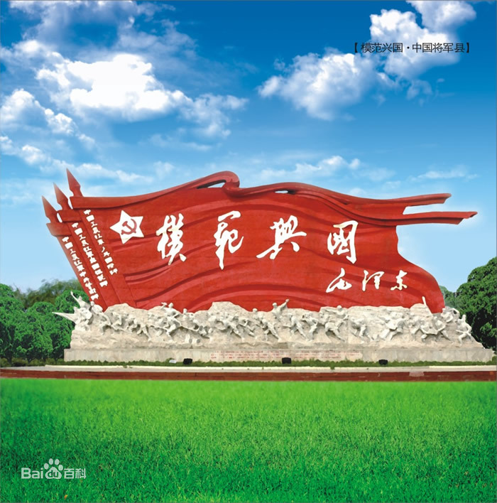
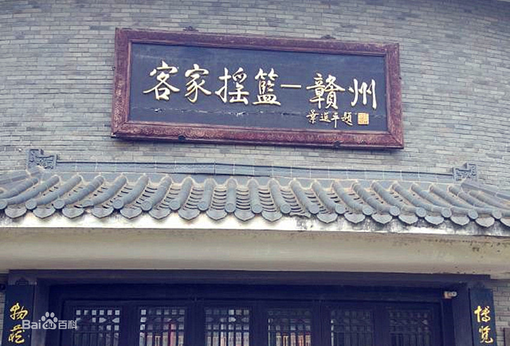
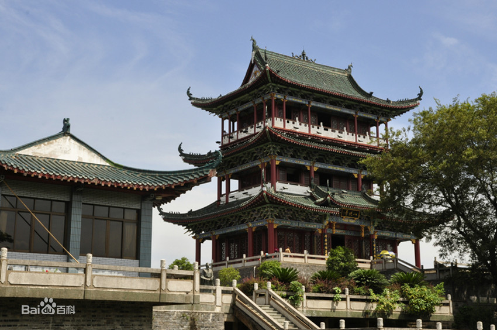

红色文化
赣州是毛泽东思想的重要发祥地，是全国著名的革命老区。1931年11月7日，在赣州瑞金的叶坪村，诞生了一个“赤色中国”——中华苏维埃共和国，故有“红色故都”、“共和国摇篮”之称。第二次国内革命战争时期，毛泽东、朱德、周恩来、邓小平等老一辈无产阶级革命家都在这里战斗、生活过，中央革命根据地在这里创建，彪炳史册的中华苏维埃共和国在这里奠基，举世闻名的红军二万五千里长征从这里出发，艰苦卓绝的三年游击战争在这里打响。赣州为革命牺牲的有名有姓的烈士多达10.8万人，占江西省烈士总数的43%，占全国烈士总数的7%；仅兴国一县就有烈士23719人，其中牺牲在长征路上的有1.37万人，每公里就有1名兴国籍战士倒下。在共和国的第一代将帅中，十大元帅中有9位（徐向前除外）、十大将中的7位（粟裕、陈赓、黄克诚、谭政、萧劲光、张云逸、罗瑞卿）都在赣南这块土地上生活过、战斗过。这既给我们留下了宝贵的精神财富，也留下了一大批革命旧址等红色资源。赣州因此被列为全国12大重点红色旅游区、30条红色旅游精品线路和100个红色旅游经典景区之一，主要有著名的苏维埃三大旧址群、长征第一山、长征第一渡、宁都起义指挥部旧址，还有全国著名的将军县兴国、邓小平任会寻安中心县委书记的旧址等。截至2016年，已有中央和国家40多个部委在这里寻根溯源，建立了爱国主义和革命传统教育基地。
客家文化
赣州是客家先民南迁第一站，是客家民系的发祥地和客家人的主要聚居地之一，赣州市18个县（市、区），除章贡区大部分地区和信丰县的嘉定镇以及其他几个居民点外，其余均属客家语地区，客家人占赣州市总人口的95%以上，有“客家摇篮”之称。据统计，赣南籍客家人在港台及海外有20多万人，其中华侨分布在东南亚及日本、加拿大、澳大利亚、美国等20多个国家和地区。赣州市境内仍有600余幢客家围屋，保存最完好、最具代表性的有龙南的关西新围、燕翼围和安远的东升围。赣州有客家文化城，也有许多客家古村落如白鹭村。 2013年1月6日，文化部正式发文，同意在江西赣州市设立国家级“客家文化（赣南）生态保护实验区”。
宋城文化
赣州是中国当今保存最完好的北宋城，尤其是宋代文物最多的一座滨水城市，走进赣州古城如置身“宋城博物馆”，故有“江南宋城”之誉。这里有“江南第一石窟”——通天岩，有全国唯一的宋代铭文砖城墙，有沿用了近900年历史、由100条木舟用铁索连环而成的古代水上交通要道——古浮桥，有中国唯一仍在使用的古代下水道系统——古福寿沟，有中国八景文化的发祥地八境台、南宋词人辛弃疾留下千古绝唱《菩萨蛮·书江西造口壁》的郁孤台等。